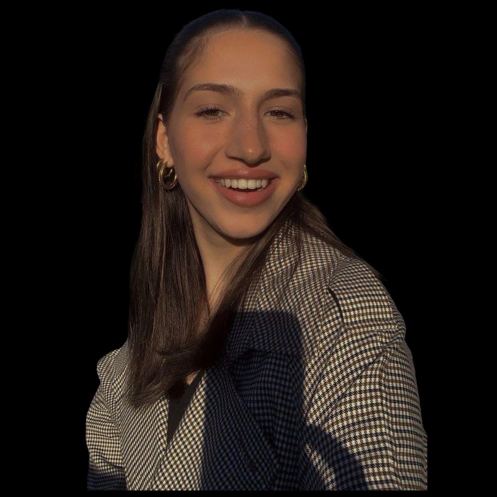
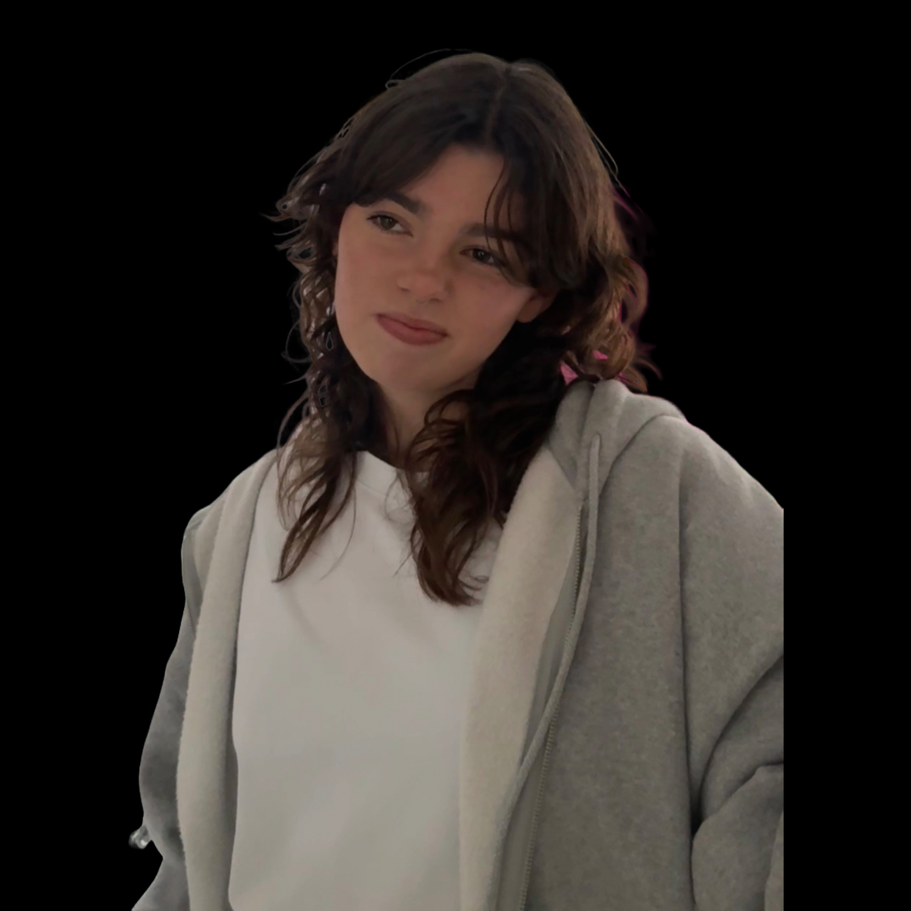

Bekijk hier de laatste aflevering
Het Openbaar Vervoer
In deze aflevering duiken we in het fenomeen van telefoongebruik in de trein. Als je om je heen kijkt, lijkt iedereen in zijn eigen digitale bubbel te zitten. Waarom vermijden we oogcontact en kiezen we massaal voor onze schermen? is het een vorm van ontsnappen, of simpelweg een nieuwe sociale norm?

Over ons
Wij zijn Saar en Chiara en wij hebben de podcast Ik Zie Ik Zie Wie Jij Niet Ziet gemaakt!, een podcast waarin we bespreken wat we dagelijks zien om ons heen, eigelijk gewoon mensenkijken! Meer over ons te weten komen? lees hieronder meer!
Chiara
Hoi! Ik ben Chiara, 17 jaar en ik kom uit Purmerend. Als creatieveling ben ik altijd bezig met nieuwe dingen maken, van tekenen en schilderen tot muziek maken op mijn gitaar, maar mijn grootste inspiratie haal ik uit mensen. De kleine, bijzondere dingen die je opvalt als je goed kijkt, vind ik fascinerend, vandaar deze podcast!
Saar
Hoi! Ik ben Saar, ik kom uit Beverwijk. Ik ben 19 jaar en in mijn vrije tijd ben ik vaak piano aan het spelen, aan het paardrijden of lekker aan het tekenen. Creatief bezig zijn is echt mijn manier om te ontspannen en mijn gedachten kwijt te kunnen. Ik ben de podcast begonnen omdat ik elke dag wel in de trein zit en ik graag naar mensen kijk. De kleine momenten en verhalen die je kunt opvangen , inspireren me en dat wil ik graag delen in de podcast!